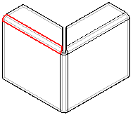
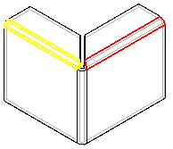

Close a 3-bend corner
-
Choose Home tab→Sheet Metal group→Corners list→Close 3-Bend Corner .
-
Select the first outer bend.

Note:The bend angle must be less than or equal to 90 degrees.
-
Select the second bend.

-
Use the command bar boxes to define the characteristics of the feature.
-
Finish the feature.
Tip:
-
You can hold the Shift key and click a highlighted bend to remove it from the select set.